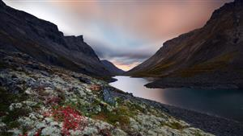
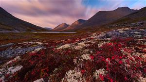

Там, где заканчивается сеть, начинается эфир. В заполярных местах вокруг ВТВ телефон молчит, интернет исчезает, FM-шкала шипит пустотой, а вокруг остаются только озёра, сосны, камень, ветер и огромное небо. В этом девственном крае, почти не тронутом человеком, мы создаём «Дыхание ВТВ» — автономную радиостанцию на 1219 кГц, которая будет звучать как северный маяк для тех, кто случайно поймает её среди тишины. Немного мистики УВБ-76, немного походной романтики, немного инженерного безумия: бочки в земле, заземляющая «звезда» в воде, провод по соснам и плейлист на годы без рекламы и повторов. Станцию трудно найти, невозможно случайно объяснить и легко запомнить, если однажды ночью её голос всплывёт из шума средних волн.


Практическое руководство по динамической магниевой установке: модульная электроника «без паяльной паранойи», прозрачная заливка силиконом и высокоэффективное водяное заземление «Звезда». Целевая несущая в эфире — 1219 кГц (средние волны).
«Дыхание ВТВ» — это автономный полевой радиомаяк: не заводская станция и не сложная лаборатория, а набор грубых, понятных вещей, которые можно привезти на место как походное снаряжение. В земле работают несколько пластиковых бочек с магнием, углём и солёной водой; озеро становится большим природным заземлением; сосны держат длинный провод-антенну; маленькая электроника берёт эту энергию, крутит плейлист и отправляет голос станции в средние волны.
Зачем: сделать точку живого эфира там, где телефон не ловит, интернет мёртв, а обычного радио нет. Это летний проект на стыке природы, рыбалки, инженерного любопытства и здорового дела руками: приехали, выкопали, собрали, натянули провод, проверили приёмник — и в тишине Заполярья появился свой слабый, но настоящий сигнал.
Химическая батарея (3 бочки ПНД) стабильно генерирует 8–20 Вт мощности. Мы выделяем на питание "мозгов" до 1 Ватта (что с запасом перекрывает любые нужды), а всю остальную энергию направляем в антенну через высокоэффективный MOSFET-ключ (Class-E). Это позволяет собрать передатчик из готовых, дешевых модулей с маркетплейсов, с минимальным использованием паяльника.
По данным форумов энтузиастов-выживальщиков и химическим исследованиям земляных батарей, обычный графитовый катод быстро подвергается газовой поляризации (покрывается пузырьками водорода), что увеличивает внутреннее сопротивление и роняет ток.
Добавление "куклы" с диоксидом марганца (MnO₂) решает эту проблему кардинально:
Жесткое ограничение в "минимальные 2 Вт" исключено. Бочки будут закопаны под землю, а зимой дополнительно укрыты снегом. Это гарантирует, что температура внутри даже в лютые морозы не опустится ниже -10°C. Вся вырабатываемая мощность строго распределяется по приоритетам.
Нам необходимо, чтобы сначала стабильно питалась схема генерации сигнала, а всё усиление сигнала шло по остаточному принципу.
Для стабильной работы зимой ячейка помещается ниже уровня промерзания почвы или укрывается снегом.
Для понимания того, откуда берется энергия, ниже приведены процессы, происходящие внутри 3-х бочек с магний-графитовыми ячейками (с деполяризатором MnO₂).
1. На аноде (Растворение магния):
Mg → Mg²⁺ + 2e⁻
2. На катоде (Восстановление воды):
2H₂O + 2e⁻ → H₂ + 2OH⁻
3. Деполяризация (внутри куклы):
Пиролюзит (MnO₂) окисляет газообразный водород, не давая ему изолировать графит:
H₂ + 2MnO₂ → 2MnO(OH)
Итоговая реакция:
Mg + 2H₂O + 2MnO₂ → Mg(OH)₂↓ + 2MnO(OH)↓ + Тепло (Q)
Продукты реакции — гидроксид магния Mg(OH)₂ (белый осадок) и манганит MnO(OH) — нерастворимы.
Поскольку реакция деполяризации происходит прямо в мешочке "куклы", поры пиролюзита и сама ткань постепенно забиваются (зашламляются) этими твердыми осадками.
Именно поэтому система требует обслуживания не реже 1 раза в 14 месяцев: нужно извлекать куклы, механически счищать шлам и менять мешки с засыпкой.
Модель работы передатчика по месяцам на основе климатических данных аэропорта Мурманск (Мурмаши). Учтено, что бочки закопаны под слой мха (20 см) и зимнего снега (до 2 м), поэтому реальная температура вокруг ячеек программно ограничена: не ниже -10°C зимой и не выше +15°C летом. Расчёт дальности и П-контура привязан к несущей 1219 кГц (СВ).
Модель мощности и дальности пересчитана с учётом: трёх ячеек с деполяризатором MnO₂, диапазона выработки 8–20 Вт, приоритета «мозгам» до 1 Вт (Arduino Nano + DFPlayer через MT3608), усилителя класса E (П-контур после MOSFET), и короткой антенны типа L с водяным заземлением (эффективность излучения введена коэффициентом). На графике три оценки дальности: открытая местность (земная волна без сильного рельефа), лесисто-холмистая (дополнительное ослабление), средняя между ними. Подробности и ссылки — в блоке ниже.
Расчёт внутреннего подогрева ячеек при обновлённой модели Pбат = 8…20 Вт по месяцам (см. аудит ниже). Химическое тепловыделение от экзотермической реакции окисления магния и деполяризации. Электрическое тепловыделение — по току и изменяющемуся сопротивлению электролита. (Снижением эффективности из-за постепенного зашламления пиролюзита в пределах 15% пренебрегаем).
Суммарное тепловыделение одной 65-литровой бочки на пике активности может достигать 30-35 Вт. Может ли она перегреться в летнем грунте (при +10...+15°C)? Нет, установится идеальный температурный баланс.
Итог: Если летом грунт вокруг бочки прогрет до +10°C, равновесная температура внутри бочки за счет саморазогрева составит +17.5 ... +21 °C. Это фантастическое совпадение — вы получаете идеальную "комнатную" температуру электролита прямо под землей, при которой ионная подвижность и токоотдача максимальны, а риск теплового разгона полностью исключен.
Исходные допущения (согласованы с разделами 1, 3, 8 и сметой): три гальванические ячейки в бочках ПНД; электроника — MT3608 (5 В для логики), Arduino Nano, DFPlayer Mini, модуль MOSFET (LR7843/D4184), П-контур 100 мкГн + 2×1000 пФ (подстраивается под резонанс); несущая вещания 1219 кГц (~1,219 МГц, СВ); антенна — горизонтальное полотно с коротким спуском и водяным заземлением «звезда».
Температура у ячейки T (°C) ограничена интервалом [−10…+15] (мох/снег). Полная электрическая мощность трёх ячеек моделируется линейно от холодного минимума к тёплому максимуму:
Pбат = 8 + (T + 10) · (12/25) → при T = −10 °C: 8 Вт; при T = +15 °C: 20 Вт.
Так зафиксирован диапазон 8–20 Вт, согласованный с текстом про «8–20 Вт» и пиролюзит (без отдельного множителя зашламления в графике — как и в примечании к теплу).
После приоритета DC-DC на «мозги» выделяется Pлог = 1 Вт (верхняя оценка для Arduino + DFPlayer при 5 В; светодиоды сняты по руководству). Если Pбат < Pсон ≈ 2 Вт, преобразователь не выходит на режим — передатчик и график эфира: 0. В модели климата Мурманска при ограничении T ≥ −10 °C нижняя граница Pбат = 8 Вт, режим «сон» на графике не возникает.
Мощность на входе П-контура (после ключа класса E) с КПД усилителя ηPA = 0,9 (заявлено в руководстве для класса E):
Pнос = max(0, Pбат − Pлог) · ηPA.
Для низкой вертикали/полотна на f = 1219 кГц излучающее сопротивление мало, преобладают потери; вводится совокупный коэффициент передачи в эфир ηант = 0,22 (22%): учёт несогласованных потерь, ПуГВ, короткой L-антенны и хорошего, но не идеального заземления. Тогда эквивалентная мощность для оценки дальности:
Pэкв = Pнос · ηант.
Точное поле и дальность дают программы по ITU-R P.368 (наземная волна); здесь используется упрощённая степенная модель, калибруемая по порядку величины с Pэкв:
Dоткр = k · √(Pэкв), k = 25 км/√Вт.
Открытая местность (ровная почва, проводимость порядка 10−2–10−1 С/м, без выраженных экранов) — Dоткр.
Лесисто-холмистая местность: вводится множитель ослабления рельефом и растительностью α = 0,38 (эквивалентно дополнительным ~8–10 дБ потерь по трассе в среднем; см. обобщённые потери в лесу в ITU-R P.833 для помех и среды; для грубой оценки дальности множитель согласован с полевой практикой СВ).
Dлес/холмы = α · Dоткр.
Средняя оценка (между «лучшим» и «худшим» сценарием):
Dср = (Dоткр + Dлес/холмы) / 2.
Примечание: для СВ «прямая видимость» в буквальном смысле (как для UHF) не применима; подпись на графике «открытая местность» соответствует наземной волне без сильного экранирования рельефом. Ночной эфирный слой (skywave) в модель не включён — оценка консервативна для связи по земле.
Без изменения структуры: химическое тепло Qхим ≈ 1,4·Pбат; электрическое Qэл = I²Rвнутр, I = Pбат/U, U = 3,6 В, Rвнутр(T) как в коде графика. Сумма Qхим + Qэл — кривые на нижнем графике.
Вся электроника размещается в пластиковом контейнере и заливается прозрачным силиконовым компаундом для 100% защиты от влаги. Для максимизации отдачи в эфир добавлено подводное заземление топологии "Звезда" из медной плетенки.
Берем Arduino Nano. На плате есть два мелких SMD светодиода: PWR (красный, питание) и L (зеленый, встроен в пин 13). Они нам под землей не нужны, а электричество жрут. Берем тонкие кусачки или паяльник и просто скалываем их с платы. Так же поступаем со светодиодом на модуле DFPlayer Mini.
5V и GND платы Arduino Nano, и на пины VCC и GND плеера DFPlayer Mini.НЕ ПОДКЛЮЧАЙТЕ ДИНАМИК к DFPlayer (пины SPK+/SPK-)! Встроенный усилитель сожжет наш лимит энергии.
Берем провод и соединяем пин DAC_R (или DAC_L) на плеере с пином A0 (Аналоговый вход 0) на Arduino. Это чистый, слаботочный линейный аудиосигнал.
Этот модуль работает как молниеносная кнопка. Берем готовый модуль MOSFET (D4184 или LR7843).
PWM (или SIG) соединяем с пином D9 на Arduino (оттуда пойдёт несущая 1219 кГц — в прошивке задаётся таймером/ШИМ на этой частоте, ≈1,219 МГц).VIN и GND модуля НАПРЯМУЮ с клеммами ваших бочек (минуя DC-DC преобразователь!).VOUT+ и VOUT- модуля мы подключим наш сглаживающий фильтр.Сигнал с ключа — это квадратные "рубленые" импульсы, их нельзя пускать в антенну (заглушите всю округу помехами). Нам нужна синусоида.
Покупаем в "Чип и Дип" готовую выводную индуктивность (катушку) на 100 мкГн (микроГенри) с током не менее 1-2 Ампер. Например: DR74-101-R или любую бочкообразную на гантельке.
Покупаем два пленочных или керамических конденсатора на 1000 пФ (пикоФарад) / 50V+.
Частота: П-контур подбирается под резонанс на 1219 кГц (номиналы 100 мкГн + 2×1000 пФ — стартовая точка; при расхождении с генератором — точечный подбор L или C).
Схема спайки:
VOUT+ MOSFET модуля. К этому же месту припаиваем одну ножку первого конденсатора.VOUT- (или Силовой Земле).Всё! Вы собрали эффективный АМ-передатчик Класса Е с КПД >90%.
Без идеального заземления СВ-антенна работать не будет. Нам нужно опустить противовес на глубину водоема, где вода никогда не промерзает.
VOUT-).Ниже — наглядная модель: водоём только с заземлением «звезда» на дне; три бочки ПНД (ячейки) стоят на суше, под землёй у кромки леса; заполярные сосны — высокие стволы с маленькой кроной; горизонтальное полотно на высоте кроны (~10 м), изоляторы, натяжение тросами и противовесами, спуск и коаксиал к передатчику. Несущая в эфире — 1219 кГц (согласование полотна с П-контуром — см. раздел 8). Вращайте сцену мышью (ЛКМ).
Оптимально для полотна антенны: одножильный или многожильный медный провод в ПВХ-изоляции марки ПуГВ сечением 4–6 мм² (на длинных линиях лучше 6 мм² — меньше потерь и механический запас). Ищите в отделе кабеля/провода: бухты 50–100 м, цвет изоляции любой.
Альтернатива: гибкий силовой КГ или КГтп-ХЛ (если есть в продаже) тем же сечением — устойчивее к перегибам на морозе; дороже ПуГВ.
Не подойдёт: алюминиевая СИП для воздушных линий (скрутки, хрупкость), тонкий сигнальный/«слаботочный» провод без сечения для силовых линий.
Графика: Three.js (CDN). Если сцена не появилась, откройте страницу в браузере с поддержкой WebGL и ES-модулей.
Под землей (особенно рядом с водяным заземлением) 100% влажность. Любой лак или коробка IP68 рано или поздно пустит конденсат, и плата сгниет.
Решение: Монолитная заливка, как в блоках управления стиральными машинами. Мы используем прозрачный заливочный силикон, чтобы всегда видеть состояние паек, плюс силикон мягкий и не оторвет детали при морозе (в отличие от эпоксидки).
Все модули максимально популярны, продаются везде (Ozon, Wildberries, AliExpress, Чип и Дип).
| Наименование детали | Кол-во | Цена (руб) | Где купить / Назначение |
|---|---|---|---|
| Химическая часть (Гальванические ячейки) | |||
| Тара: Бочка ПНД 65л (с хомутом) | 4 шт. (3 + 1 запасная) | ~ 5 000 – 7 000 ₽ | Агропак (СПб) / Ozon |
| Аноды: Магниевый протектор ПМ-5У | 3 шт. | ~ 9 500 – 16 000 ₽ | Мистер Климат (СПб) / Газовые магазины |
| Катоды: Электрод ЭГ Ø150 мм (L=1000 мм) | 1 шт. (на распил) | ~ 15 000 – 20 000 ₽ | Снабтехмет (СПб) / Металлобазы |
| Деполяризатор: Диоксид марганца (Пиролюзит) | 10 кг | ~ 2 500 – 3 500 ₽ | Аквапрофиль / Химреактивы (150-350 ₽/кг) |
| Электролит: Хлорид кальция (CaCl₂) тех. | 1 мешок (25 кг) | ~ 1 200 – 1 800 ₽ | Химические решения (СПб) / Ozon |
| Изоляция: Трансформаторное масло ГК | 1 канистра (5-10 л) | ~ 1 500 – 2 500 ₽ | Кварта-СМ / Автомагазины |
| Подытог (Химическая часть): | ~ 34 700 — 50 800 ₽ | ||
| Антенная и Фидерная часть (СВ-диапазон) | |||
| Провод ПуГВ 4.0 или 6.0 (медь многожильная) | 100 м (бухта) | ~ 6 500 – 8 500 ₽ | Полотно антенны "Длинный луч" (ВсеИнструменты / ЭТМ). Идеал для строймага: ПуГВ 6 мм² медь, ПВХ; альтернатива — КГ 4×6 мм². |
| Провод ПуГВ 6.0 (на снижение к земле) | 30 м | ~ 2 000 – 2 500 ₽ | Спуск от антенны до передатчика |
| Коаксиальный кабель (RG-58, 50 Ом, или аналог для СВ) | 30 м | ~ 1 500 – 3 500 ₽ | Подвод к точке подключения антенны / к гермобоксу у опоры (стройбазы, радиорынок, кабельные отделы) |
| Кабель ВВГнг-LS 1x16 (или ПуГВ 10.0) | 50 м | ~ 5 000 – 7 000 ₽ | Трасса заземления (30м) от передатчика к воде + "Веер" лучей (ВсеИнструменты) |
| Изоляторы орешковые (ИТО-20 или ИТО-40) | 4 – 6 шт. | ~ 300 – 500 ₽ | Изоляция полотна антенны от деревьев (Ozon / Радиорынок) |
| Блок-ролики металлические + Тросы | 1 комплект | ~ 2 500 – 3 000 ₽ | Трос оцинкованный Ø3–4 мм для натяжения (строительный / такелажный отдел) |
| Блоки такелажные (полиспасты) оцинкованные | 2 – 4 шт. | ~ 800 – 2 000 ₽ | Ролики для натяжения полотна и тросов без перекусывания (хозмаги, базы) |
| Противовесы натяжения (гибкие грузы / мешки с камнем / малые бетонные блоки) | 4 – 8 шт. | ~ 400 – 1 500 ₽ | Плавное натяжение; вес подбирается по сечению провода и прогибу (строймаркеты, ЖБИ) |
| Кронштейны / хомуты столбовые для крепления блоков к стволу | 4 – 8 шт. | ~ 600 – 2 000 ₽ | Хомуты с шайбой под кору + абразивная лента; опционально — ушки для полиспастов (электрика, крепёж) |
| Подытог (Антенная часть): | ~ 22 100 — 32 000 ₽ | ||
| Электроника (Мозги и Аудио) | |||
| DC-DC Повышающий преобразователь MT3608 | 2 шт (1 про запас) | ~ 150 ₽ | Ozon/WB. Делает стабильные 5V из 2.5-4.5V бочек. |
| Arduino Nano V3.0 (ATmega328P) | 1 шт | ~ 350 ₽ | Ozon/WB. Управляет ШИМ-сигналом радиопередатчика. |
| DFPlayer Mini (MP3/WAV модуль) | 1 шт | ~ 200 ₽ | Ozon/WB. Читает музыку с флешки. Берем сигнал с DAC_R. |
| Карта MicroSD 128GB (или 64GB) | 1 шт | ~ 1000 ₽ | Любой магазин. Вместит месяцы музыки. (Форматировать в FAT32). |
| Подытог (Электроника): | ~ 1 700 ₽ | ||
| Радиочастотная часть (Передатчик, 1219 кГц) | |||
| Модуль MOSFET D4184 или LR7843 | 2 шт | ~ 250 ₽ | Ozon/WB. Мощный логический ключ. Качает ток бочек в антенну (ШИМ с D9 — несущая 1219 кГц). |
| Индуктивность выводная 100 мкГн (Ток > 1.5 А) | 2 шт | ~ 100 ₽ | Чип и Дип (Напр. DR74-101-R). П-контур под резонанс на 1219 кГц (при необходимости подбор). |
| Конденсаторы керамические 1000 пФ / 50V | 5 шт | ~ 50 ₽ | Чип и Дип. Для П-контура фильтра. |
| Подытог (Радиочастотная часть): | ~ 400 ₽ | ||
| Водяное заземление (Топология "Звезда") | |||
| Медная плетенка для снятия припоя (ширина 2.5 - 3.5 мм) | 15 метров | ~ 1 200 ₽ | Ozon/Чип и Дип. Сплетение жилок дает идеальную поверхность для ВЧ тока. |
| Консервная банка (луженая) | 1 шт | Бесплатно | Центральный хаб для пайки лучей. |
| Свинец (рыболовные грузила) или припой ПОС-40/Свинец | 100 г | ~ 200 ₽ | Для стойкой к подводному гниению пайки. |
| Подытог (Водяное заземление): | ~ 1 400 ₽ | ||
| Корпус и Защита | |||
| Силиконовый компаунд прозрачный ПК-68 (100г) или ПЗСК | 1 упаковка | ~ 500 – 800 ₽ | Ozon / ВсеИнструменты / Чип и Дип. Монолитная влагозащита. |
| Пластиковый пищевой контейнер (маленький) | 1 шт | ~ 50 ₽ | Лента/Ашан. Корпус под заливку. |
| Подытог (Корпус и Защита): | ~ 550 — 850 ₽ | ||
| ИТОГО (Химическая часть, Антенна, Электроника и заземление): | ~ 60 850 — 87 150 ₽ | ||
Отдельно от основной сметы — то, что удобно на время пусконаладки и подстройки несущей 1219 кГц и согласования П-контура с антенной. Часть можно одолжить у знакомых, взять в аренду в сервисе или не покупать вовсе, если останется достаточно бытового приёмника СВ.
| Позиция | Кол-во | Цена (ориентир) | Зачем на 1219 кГц |
|---|---|---|---|
| Цифровой приёмник СВ (AM), например Tecsun PL-310ET / PL-380 | 1 шт. | ~ 6 500 — 9 000 ₽ | Приём на заданной частоте, оценка силы сигнала и «попадания» в 1219 кГц на месте. |
| SDR-приёмник (RTL-SDR Blog V3, Nooelec или аналог) | 1 шт. | ~ 3 500 — 9 000 ₽ | Спектр вокруг несущей, проверка на гармоники и побочные линии. |
| Карманный / портативный осциллограф (напр. FNIRSI, DSO-линейка) | 1 шт. | ~ 3 000 — 15 000 ₽ | Форма сигнала на ключе и после П-контура (при наличии щупа/делителя). |
| Частотомер (настольный или модуль с щупом) / мультиметр с частотомером | 1 шт. | ~ 1 500 — 8 000 ₽ | Контроль частоты генерации на D9 (если не доверяете только «на слух» приёмнику). |
| Анализатор цепей СВЧ (NanoVNA и др.) для согласования антенны на СВ | 1 шт. | ~ 4 000 — 12 000 ₽ | Опционально: точнее согласовать фидер/антенну с П-контуром на рабочей полосе. |
| Щупы, делитель 1:10, экранированный кабель | комплект | ~ 800 — 3 500 ₽ | Безопасные измерения на ВЧ без лишнего влияния на контур. |
| Подытог (если брать всё новым): | ~ 19 300 — 56 500 ₽ | ||
| Аренда/одолжить: SDR, осциллограф и частотомер часто проще временно взять у радиолюбителей; приёмник СВ полезен оставить как эталонный контроль эфира. | |||
Физика АМ-радио обрежет любые частоты выше 4.5 - 5 кГц. Если закинуть сырые MP3 на флешку, в лесу они будут звучать как неразборчивое гудение из ведра. Нам нужно обмануть ухо слушателя (применить стандарт NRSC Pre-emphasis).
Необходимо написать Python-скрипт (с использованием библиотек ffmpeg или pydub), который можно будет запустить на ПК перед копированием папки с музыкой на MicroSD. Скрипт должен делать следующее с каждым файлом:
Для уверенного приема сигнала на Средних Волнах (526 – 1606 кГц) сквозь холмы и лес подойдут приемники, имеющие встроенную ферритовую (магнитную) антенну и режим "AM" (Amplitude Modulation) или "СВ" (Средние Волны). Настройтесь на 1219 кГц — частота вещания станции «Дыхание ВТВ». Ниже представлены 10 популярных моделей, которые прямо сейчас продаются на маркетплейсах РФ (Wildberries, Ozon, DNS, Яндекс.Маркет):
Цифровой DSP-приемник эталонного качества. Идеальная чувствительность на СВ, отображение уровня сигнала, термометр. Любимец выживальщиков.
Легенда радиоприема. Мощнейший всеволновый приемник с отличной ферритовой антенной. Берет очень слабые сигналы за десятки километров.
Бюджетный цифровой хит. Ловит AM/FM/SW, имеет mp3-плеер и диктофон (умеет записывать эфир на флешку). Заряжается как телефон.
Классический аналоговый дизайн "под ретро". Отличная громкость, ловит СВ (AM) и КВ. Питание от сети или батареек D.
Недорогие и надежные "походные" приемники с механической шкалой настройки. Есть диапазоны FM и AM. Дешево и сердито.
Японское качество тюнера (собирают в Индонезии/Малайзии). Аналоговая шкала, очень цепкий приемник на AM-волнах без лишних шумов.
Аналог Tecsun, мощный цифровой сканер. Питается от аккумулятора 18650, отлично ловит Средние и Короткие волны, есть Авиа диапазон.
Доступные приемники в DNS/Ситилинке. Простая аналоговая крутилка, есть AM-диапазон. Хорошо подходит для неприхотливых слушателей.
Один из самых массовых и дешевых радиоприемников. Выглядит просто, но отлично ловит СВ (AM) за счет длинной ферритовой антенны.
Практически все автомобильные магнитолы (Pioneer, JVC, Kenwood, штатные ГУ) имеют кнопку AM / MW. Автомобильная антенна отлично ловит СВ.
Важно: На Средних Волнах (AM/СВ) радиоволну ловит не внешняя телескопическая антенна-удочка (она только для FM/КВ), а встроенная внутрь корпуса магнитная (ферритовая) антенна. Поэтому для лучшего приема сам корпус приемника нужно вращать в пространстве (он имеет ярко выраженную направленность "восьмеркой").